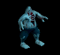
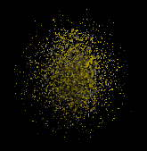
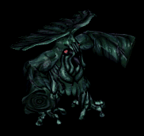
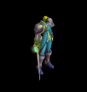
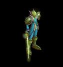
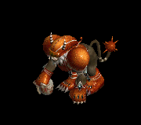
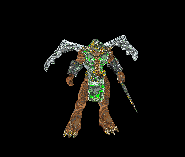
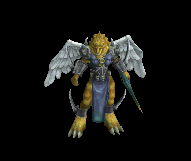
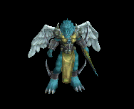

イヤリング をドロップするmob一覧
一覧ページへ
| ジャンキー | アンデット | セミ1 | |||||||
|---|---|---|---|---|---|---|---|---|---|
|  | スリング(390) | ステッキ(260) | 鍵(30) | 兜・帽子(220) | イヤリング(200) | ブローチ(150) | |||
| ゴースト | アンデット | 一般1 | |||||||
 | 笛(410) | 翼(10) | 鍵(10) | マント(230) | イヤリング(210) | ブローチ(150) | 水晶(410) | ||
| イリュージョン | アンデット | 一般2 | |||||||
 | 笛(380) | 翼(250) | 矢(380) | マント(210) | イヤリング(190) | ブローチ(160) | 水晶(380) | 魔弾(380) | |
| ファントム | アンデット | 一般3 | |||||||
 | 笛(360) | 翼(240) | 矢(360) | マント(200) | イヤリング(180) | ブローチ(170) | 水晶(240) | 魔弾(360) | |
| バンシー | アンデット | セミ1 | |||||||
 | 笛(390) | 翼(260) | イベント(390) | マント(220) | イヤリング(200) | ブローチ(180) | 水晶(260) | ||
| 幻影 | アンデット | ボス1 | |||||||
 | 笛(470) | 翼(310) | 鍵(470) | マント(260) | イヤリング(240) | ブローチ(190) | 水晶(310) | ||
| ダークサマナー | 人間 | 一般2 | |||||||
 | 鞭(380) | 投擲(250) | 弾(380) | 腰(210) | イヤリング(190) | 肩刺青(110) | |||
| レッドアイ所員 | 人間 | 一般3 | |||||||
 | 鞭(360) | 投擲(240) | 弾(360) | 腰(200) | イヤリング(180) | 肩刺青(120) | |||
| デビルスカラー | 人間 | 一般4 | |||||||
 | 鞭(300) | 牙(200) | CP回復(300) | 腰(170) | イヤリング(150) | 肩刺青(130) | 双剣(200) | ||
| 降神術師 | 人間 | セミ2 | |||||||
 | 鞭(420) | スリング(280) | 弾(420) | 腰(230) | イヤリング(210) | 肩刺青(140) | |||
| 堕落予言者 | 人間 | ボス1 | |||||||
 | 鞭(470) | 投擲(310) | CP回復(470) | 腰(260) | イヤリング(240) | 肩刺青(150) | |||
| レッドアイ元帥 | 人間 | ボス2 | |||||||
 | ステッキ(490) | 笛(330) | 弾(490) | マント(270) | イヤリング(250) | ブローチ(220) | |||
| オーガ | 悪魔 | 一般3 | |||||||
 | 鈍器(360) | 杖(240) | イベント(360) | 鎧(200) | イヤリング(180) | 能力向上1(140) | 本(240) | ||
| オーガソルジャー | 悪魔 | 一般4 | |||||||
 | 鈍器(300) | スリング(200) | 弾(300) | 鎧(170) | イヤリング(150) | 能力向上1(120) | |||
| オーガチーフ | 悪魔 | セミ1 | |||||||
 | 鈍器(390) | 杖(260) | 状態異常回復1(390) | 鎧(220) | イヤリング(200) | 能力向上1(160) | 本(260) | ||
| オーガオフィサー | 悪魔 | セミ3 | |||||||
 | ステッキ(450) | 弓(300) | HP回復(450) | 鎧(250) | イヤリング(230) | 能力向上1(180) | 銃(300) | ||
| オーガゼネラル | 悪魔 | ボス2 | |||||||
 | 鈍器(490) | 杖(330) | 状態異常回復2(120) | 鎧(270) | イヤリング(250) | 能力向上1(200) | 本(330) | ||
| ストーンラーバ | 悪魔 | ボス1 | |||||||
 | none(470) | 杖(310) | 鍵(470) | マント(260) | イヤリング(240) | 宝石(190) | 本(310) | ||
| スコーピオン | 動物 | 一般1 | |||||||
 | 弓(410) | 槍(270) | 盾(410) | 兜・帽子(230) | イヤリング(210) | 特殊1(160) | 箒(270) | 銃(410) | |
| デスピンサー | 動物 | 一般3 | |||||||
 | 弓(360) | 槍(240) | 盾(360) | 兜・帽子(200) | イヤリング(180) | 特殊1(140) | 箒(240) | 銃(360) | |
| 食人スコーピオン | 動物 | セミ2 | |||||||
 | 弓(420) | 槍(280) | 矢(420) | 兜・帽子(230) | イヤリング(210) | 特殊1(170) | 箒(280) | 銃(420) | 魔弾(420) |
| エアスライム | 動物 | 一般2 | |||||||
| 鞭(380) | スリング(250) | 弾(380) | 腰(210) | イヤリング(190) | 特殊1(150) | ||||
| 蟲の群れ | 動物 | 一般1 | |||||||
|  | 笛(410) | 翼(270) | イベント(410) | グローブ(230) | イヤリング(210) | 帰還(160) | 水晶(270) | ||
| 殺人蚊の群れ | 動物 | 一般3 | |||||||
 | 笛(360) | 翼(240) | イベント(360) | 足(200) | イヤリング(180) | 帰還(140) | 水晶(240) | ||
| ディザースター | 動物 | ボス1 | |||||||
 | 笛(470) | 翼(310) | イベント(470) | マント(260) | イヤリング(240) | 帰還(190) | 水晶(310) | ||
| ポーラーベアー | 動物 | セミ1 | |||||||
 | 両手剣(390) | 鞭(260) | 状態異常回復2(100) | 鎧(220) | イヤリング(200) | 宝石(160) | 鎌(390) | ||
| ジャンキーEx | アンデット | セミ1 | |||||||
| スリング(450) | ステッキ(300) | 鍵(30) | 兜・帽子(250) | イヤリング(230) | ブローチ(150) | ||||
| ゴーストEx | アンデット | 一般1 | |||||||
| 笛(410) | 翼(270) | 鍵(10) | マント(230) | イヤリング(210) | ブローチ(150) | 水晶(270) | ||
| イリュージョンEx | アンデット | 一般2 | |||||||
| 笛(380) | 翼(250) | 矢(380) | マント(210) | イヤリング(190) | ブローチ(160) | 水晶(250) | 魔弾(380) | |
| ファントムEx | アンデット | 一般3 | |||||||
| 笛(360) | 翼(240) | 矢(360) | マント(200) | イヤリング(180) | ブローチ(170) | 水晶(240) | 魔弾(360) | |
| バンシーEx | アンデット | セミ1 | |||||||
| 笛(450) | 翼(300) | イベント(450) | マント(250) | イヤリング(230) | ブローチ(180) | 水晶(300) | ||
| 幻影Ex | アンデット | ボス1 | |||||||
| 笛(1200) | 翼(800) | 鍵(1200) | マント(670) | イヤリング(600) | ブローチ(190) | 水晶(800) | ||
| ダークサマナーEx | 人間 | 一般2 | |||||||
| 鞭(380) | 投擲(250) | 弾(380) | 腰(210) | イヤリング(190) | 肩刺青(110) | |||
| レッドアイ所員Ex | 人間 | 一般3 | |||||||
| 鞭(360) | 投擲(240) | 弾(360) | 腰(200) | イヤリング(180) | 肩刺青(120) | |||
| デビルスカラーEx | 人間 | 一般4 | |||||||
| 鞭(300) | 牙(200) | CP回復(300) | 腰(170) | イヤリング(150) | 肩刺青(130) | 双剣(200) | ||
| 降神術師Ex | 人間 | セミ2 | |||||||
| 鞭(650) | スリング(430) | 弾(650) | 腰(360) | イヤリング(330) | 肩刺青(140) | |||
| 堕落予言者Ex | 人間 | ボス1 | |||||||
| 鞭(1200) | 投擲(800) | CP回復(1200) | 腰(670) | イヤリング(600) | 肩刺青(150) | |||
| レッドアイ元帥Ex | 人間 | ボス2 | |||||||
| ステッキ(2000) | 笛(1330) | 弾(2000) | マント(1110) | イヤリング(1000) | ブローチ(220) | |||
| オーガEx | 悪魔 | 一般3 | |||||||
| 鈍器(360) | 杖(240) | イベント(360) | 鎧(200) | イヤリング(180) | 能力向上1(140) | 本(240) | ||
| オーガソルジャーEx | 悪魔 | 一般4 | |||||||
| 鈍器(300) | スリング(200) | 弾(300) | 鎧(170) | イヤリング(150) | 能力向上1(120) | |||
| オーガチーフEx | 悪魔 | セミ1 | |||||||
| 鈍器(450) | 杖(300) | 状態異常回復1(450) | 鎧(250) | イヤリング(230) | 能力向上1(180) | 本(300) | ||
| オーガオフィサーEx | 悪魔 | セミ3 | |||||||
| ステッキ(800) | 弓(530) | HP回復(800) | 鎧(440) | イヤリング(400) | 能力向上1(320) | 銃(530) | ||
| オーガゼネラルEx | 悪魔 | ボス2 | |||||||
| 鈍器(2000) | 杖(1330) | 状態異常回復2(500) | 鎧(1110) | イヤリング(1000) | 能力向上1(800) | 本(1330) | ||
| ストーンラーバEx | 悪魔 | ボス1 | |||||||
| none(1200) | 杖(800) | 鍵(550) | マント(670) | イヤリング(600) | 宝石(480) | 本(800) | ||
| スコーピオンEx | 動物 | 一般1 | |||||||
| 弓(410) | 槍(270) | 盾(410) | 兜・帽子(230) | イヤリング(210) | 特殊1(160) | 箒(270) | 銃(410) | |
| デスピンサーEx | 動物 | 一般3 | |||||||
| 弓(360) | 槍(240) | 盾(360) | 兜・帽子(200) | イヤリング(180) | 特殊1(140) | 箒(240) | 銃(360) | |
| 食人スコーピオンEx | 動物 | セミ2 | |||||||
| 弓(650) | 槍(430) | 矢(650) | 兜・帽子(360) | イヤリング(330) | 特殊1(260) | 箒(430) | 銃(650) | 魔弾(650) |
| エアスライムEx | 動物 | 一般2 | |||||||
| 鞭(380) | スリング(250) | 弾(380) | 腰(210) | イヤリング(190) | 特殊1(150) | ||||
| 蟲の群れEx | 動物 | 一般1 | |||||||
| 笛(410) | 翼(270) | イベント(410) | グローブ(230) | イヤリング(210) | 帰還(160) | 水晶(270) | |||
| 殺人蚊の群れEx | 動物 | 一般3 | |||||||
| 笛(360) | 翼(240) | イベント(360) | 足(200) | イヤリング(180) | 帰還(140) | 水晶(240) | ||
| ディザースターEx | 動物 | ボス1 | |||||||
| 笛(1200) | 翼(800) | イベント(1200) | マント(670) | イヤリング(600) | 帰還(480) | 水晶(800) | ||
| 北極熊Ex | 動物 | セミ1 | |||||||
| 両手剣(450) | 鞭(300) | 状態異常回復2(110) | 鎧(250) | イヤリング(230) | 宝石(180) | 鎌(450) | ||
| ニックスEx | 神獣 | 一般2 | |||||||
 | 鈍器(380) | 片手剣(250) | 鍵(30) | 鎧(210) | イヤリング(190) | 肩刺青(110) | クロー(250) | ||
| メロウEx | 神獣 | 一般3 | |||||||
 | 鈍器(360) | 片手剣(240) | イベント(360) | 鎧(200) | イヤリング(180) | 肩刺青(120) | クロー(240) | ||
| マーマンEx | 神獣 | 一般4 | |||||||
 | 鈍器(300) | 片手剣(200) | イベント(300) | 鎧(170) | イヤリング(150) | 肩刺青(130) | クロー(200) | ||
| マーマンファイタEx | 神獣 | セミ2 | |||||||
 | 鈍器(650) | 片手剣(430) | イベント(650) | 鎧(360) | イヤリング(330) | 肩刺青(140) | クロー(430) | ||
| トリトンEx | 神獣 | ボス2 | |||||||
 | 鈍器(2000) | 片手剣(1330) | 鍵(210) | 鎧(1110) | イヤリング(1000) | 肩刺青(150) | クロー(1330) | ||
| エンティングEx | 神獣 | セミ1 | |||||||
|  | 杖(450) | 鈍器(300) | HP回復(450) | 腰(250) | イヤリング(230) | 能力向上1(180) | 本(450) | ||
| エントEx | 神獣 | ボス1 | |||||||
 | 杖(1200) | 槍(800) | CP回復(1200) | 腰(670) | イヤリング(600) | 能力向上1(480) | 本(1200) | 箒(800) | |
| ビビッドブラックEx | 神獣 | ボス3 | |||||||
 | スリング(2800) | 翼(1870) | 弾(2800) | 兜・帽子(1560) | イヤリング(1400) | 特殊1(1120) | 水晶(1870) | ||
| ジャンキーZin | アンデット | セミ1 | |||||||
| スリング(650) | ステッキ(430) | 鍵(60) | 兜・帽子(360) | イヤリング(330) | ブローチ(150) | ||||
| ゴーストZin | アンデット | 一般1 | |||||||
| 笛(1210) | 翼(810) | 鍵(70) | マント(670) | イヤリング(610) | ブローチ(150) | 水晶(810) | ||
| イリュージョンZin | アンデット | 一般2 | |||||||
| 笛(1380) | 翼(920) | 矢(1380) | マント(770) | イヤリング(690) | ブローチ(160) | 水晶(920) | 魔弾(1380) | |
| ファントムZin | アンデット | 一般3 | |||||||
| 笛(1560) | 翼(1040) | 矢(1560) | マント(870) | イヤリング(780) | ブローチ(170) | 水晶(1040) | 魔弾(1560) | |
| バンシーZin | アンデット | セミ1 | |||||||
| 笛(650) | 翼(430) | イベント(650) | マント(360) | イヤリング(330) | ブローチ(180) | 水晶(430) | ||
| 幻影Zin | アンデット | ボス1 | |||||||
| 笛(1000) | 翼(670) | 鍵(160) | マント(560) | イヤリング(500) | ブローチ(190) | 水晶(670) | ||
| ダークサマナーZin | 人間 | 一般2 | |||||||
| 鞭(1380) | 投擲(920) | 弾(1380) | 腰(770) | イヤリング(690) | 肩刺青(110) | |||
| レッドアイ所員Zin | 人間 | 一般3 | |||||||
| 鞭(1560) | 投擲(1040) | 弾(1560) | 腰(870) | イヤリング(780) | 肩刺青(120) | |||
| デビルスカラーZin | 人間 | 一般4 | |||||||
| 鞭(1200) | 牙(800) | CP回復(1200) | 腰(670) | イヤリング(600) | 肩刺青(130) | 双剣(800) | ||
| 降神術師Zin | 人間 | セミ2 | |||||||
| 鞭(750) | スリング(500) | 弾(750) | 腰(420) | イヤリング(380) | 肩刺青(140) | |||
| 堕落予言者Zin | 人間 | ボス1 | |||||||
| 鞭(1000) | 投擲(670) | CP回復(1000) | 腰(560) | イヤリング(500) | 肩刺青(150) | |||
| レッドアイ元帥Zin | 人間 | ボス2 | |||||||
| ステッキ(1100) | 笛(730) | 弾(1100) | マント(610) | イヤリング(550) | ブローチ(220) | |||
| オーガZin | 悪魔 | 一般3 | |||||||
| 鈍器(1560) | 杖(1040) | イベント(1560) | 鎧(870) | イヤリング(780) | 能力向上1(620) | 本(1040) | ||
| オーガソルジャーZin | 悪魔 | 一般4 | |||||||
| 鈍器(1200) | スリング(800) | 弾(1200) | 鎧(670) | イヤリング(600) | 能力向上1(480) | |||
| オーガチーフZin | 悪魔 | セミ1 | |||||||
| 鈍器(650) | 杖(430) | 状態異常回復1(650) | 鎧(360) | イヤリング(330) | 能力向上1(260) | 本(430) | ||
| オーガオフィサーZin | 悪魔 | セミ3 | |||||||
| ステッキ(900) | 弓(600) | HP回復(900) | 鎧(500) | イヤリング(450) | 能力向上1(360) | 銃(600) | ||
| オーガゼネラルZin | 悪魔 | ボス2 | |||||||
| 鈍器(1100) | 杖(730) | 状態異常回復2(280) | 鎧(610) | イヤリング(550) | 能力向上1(440) | 本(730) | ||
| ストーンラバーZin | 悪魔 | ボス1 | |||||||
 | none(1000) | 杖(670) | 鍵(1000) | マント(560) | イヤリング(500) | 宝石(400) | 本(670) | ||
| スコーピオンZin | 動物 | 一般1 | |||||||
| 弓(1210) | 槍(810) | 盾(1210) | 兜・帽子(670) | イヤリング(610) | 特殊1(480) | 箒(810) | 銃(1210) | |
| デスピンサーZin | 動物 | 一般3 | |||||||
| 弓(1560) | 槍(1040) | 盾(1560) | 兜・帽子(870) | イヤリング(780) | 特殊1(620) | 箒(1040) | 銃(1560) | |
| 食人スコーピオンZin | 動物 | セミ2 | |||||||
| 弓(750) | 槍(500) | 矢(750) | 兜・帽子(420) | イヤリング(380) | 特殊1(300) | 箒(500) | 銃(750) | 魔弾(750) |
| エアスライムZin | 動物 | 一般2 | |||||||
| 鞭(1380) | スリング(920) | 弾(1380) | 腰(770) | イヤリング(690) | 特殊1(550) | ||||
| 蟲の群れZin | 動物 | 一般1 | |||||||
| 笛(1210) | 翼(810) | イベント(1210) | グローブ(670) | イヤリング(610) | 帰還(480) | 水晶(810) | |||
| 殺人蚊の群れZin | 動物 | 一般3 | |||||||
| 笛(1560) | 翼(1040) | イベント(1560) | 足(870) | イヤリング(780) | 帰還(620) | 水晶(1040) | ||
| ディザースターZin | 動物 | ボス1 | |||||||
| 笛(1000) | 翼(670) | イベント(1000) | マント(560) | イヤリング(500) | 帰還(400) | 水晶(670) | ||
| 北極熊Zin | 動物 | セミ1 | |||||||
| 両手剣(650) | 鞭(430) | 状態異常回復2(160) | 鎧(360) | イヤリング(330) | 宝石(260) | 鎌(650) | ||
| ニックスZin | 神獣 | 一般2 | |||||||
| 鈍器(1380) | 片手剣(920) | 鍵(70) | 鎧(770) | イヤリング(690) | 肩刺青(110) | クロー(920) | ||
| メロウZin | 神獣 | 一般3 | |||||||
| 鈍器(1560) | 片手剣(1040) | イベント(1560) | 鎧(870) | イヤリング(780) | 肩刺青(120) | クロー(1040) | ||
| マーマンZin | 神獣 | 一般4 | |||||||
| 鈍器(1200) | 片手剣(800) | イベント(1200) | 鎧(670) | イヤリング(600) | 肩刺青(130) | クロー(800) | ||
| マーマンファイタZin | 神獣 | セミ2 | |||||||
| 鈍器(750) | 片手剣(500) | イベント(750) | 鎧(420) | イヤリング(380) | 肩刺青(140) | クロー(500) | ||
| トリトンZin | 神獣 | ボス2 | |||||||
| 鈍器(1100) | 片手剣(730) | 鍵(110) | 鎧(610) | イヤリング(550) | 肩刺青(150) | クロー(730) | ||
| エンティングZin | 神獣 | セミ1 | |||||||
| 杖(650) | 鈍器(430) | HP回復(650) | 腰(360) | イヤリング(330) | 能力向上1(260) | 本(650) | |||
| エントZin | 神獣 | ボス1 | |||||||
| 杖(1000) | 槍(670) | CP回復(1000) | 腰(560) | イヤリング(500) | 能力向上1(400) | 本(1000) | 箒(670) | |
| ビビッドブラックZin | 神獣 | ボス3 | |||||||
| スリング(1200) | 翼(800) | 弾(1200) | 兜・帽子(670) | イヤリング(600) | 特殊1(480) | 水晶(800) | ||
 | 弓(1560) | 片手剣(1040) | 矢(1560) | グローブ(900) | 手首(780) | 腕刺青(170) | クロー(1040) | 銃(1560) | 魔弾(1560) |
| ハイエルフ1 Zin | 人間 | セミ1 | |||||||
 | 片手剣(90) | イヤリング(260) | 帰還(180) | 槍(140) | 槍投擲機(40) | イベント(50) | クロー(90) | 箒(140) | |
| ハイエルフ3 Zin | 人間 | ボス1 | |||||||
 | 片手剣(250) | イヤリング(750) | 足(500) | 槍(400) | 状態異常回復1(100) | 杖(150) | クロー(250) | 本(150) | 箒(400) |
| エルフ貴族 Zin | 人間 | 一般4 | |||||||
 | 能力向上2(50) | イヤリング(150) | 足(100) | CP回復(80) | 能力向上2(20) | HP回復(30) | |||
| エルフ貴族2 Zin | 人間 | セミ3 | |||||||
 | 宝石(180) | イヤリング(530) | 足(350) | 職業鎧(280) | 槍投擲機(70) | 宝石(110) | |||
| エルフ貴族4 Zin | 人間 | ボス3 | |||||||
|  | 片手剣(600) | イヤリング(1800) | 腕刺青(1200) | 鞭(960) | 槍投擲機(240) | 兜・帽子(360) | クロー(600) | ||
| エルフガーディア2 Zin | 人間 | ボス1 | |||||||
 | 鍵(250) | イヤリング(750) | 足(500) | 槍(400) | 槍投擲機(100) | 兜・帽子(150) | 箒(400) | ||
| エルフガーディア3 Zin | 人間 | ボス2 | |||||||
 | 片手剣(450) | イヤリング(1350) | 弾(900) | 能力向上1(720) | 肩刺青(180) | 職業鎧(270) | クロー(450) | ||
| エルフガーディア4 Zin | 人間 | ボス3 | |||||||
|  | 片手剣(600) | イヤリング(1800) | 足(1200) | CP回復(960) | 槍投擲機(240) | 兜・帽子(360) | クロー(600) | ||
| 魔女 Zin | 悪魔 | 一般3 | |||||||
 | 鎧(170) | イヤリング(210) | 足(90) | 十字架(50) | ステッキ(30) | 盾(10) | |||
| 魔女2 Zin | 悪魔 | ボス1 | |||||||
 | 鍵(650) | イヤリング(800) | 腕刺青(330) | 笛(200) | 状態異常回復1(100) | 盾(50) | |||
| 魔女3 Zin | 悪魔 | ボス2 | |||||||
 | 鎧(1170) | イヤリング(1440) | 足(590) | 十字架(360) | ステッキ(180) | 盾(90) | |||
| 魔女4 Zin | 悪魔 | ボス3 | |||||||
 | 鎧(1560) | イヤリング(1920) | 帰還(790) | 笛(480) | 状態異常回復1(240) | HP回復(120) | |||
| サキュバス1 Zin | 悪魔 | セミ1 | |||||||
 | 鎧(230) | イヤリング(280) | 足(120) | 能力向上1(70) | ステッキ(40) | 盾(20) | |||
| サキュバス2 Zin | 悪魔 | セミ3 | |||||||
 | 鍵(460) | イヤリング(560) | 腕刺青(230) | 笛(140) | 状態異常回復1(70) | 盾(40) | |||
| サキュバス4 Zin | 悪魔 | ボス3 | |||||||
 | 能力向上2(1560) | イヤリング(1920) | 帰還(790) | マント(480) | 肩刺青(240) | 盾(120) | |||
| パンタズドリーム1 Zin | 悪魔 | セミ2 | |||||||
 | 鍵(360) | イヤリング(440) | 帰還(180) | 笛(110) | ステッキ(60) | 盾(30) | |||
| パンタズドリーム2 Zin | 悪魔 | セミ3 | |||||||
 | 鎧(460) | イヤリング(560) | 足(230) | 笛(140) | 状態異常回復1(70) | イベント(40) | |||
| パンタズドリーム3 Zin | 悪魔 | ボス1 | |||||||
 | 鎧(650) | イヤリング(800) | 腕刺青(330) | 能力向上1(200) | ステッキ(100) | 盾(50) | |||
| パンタズドリーム4 Zin | 悪魔 | ボス3 | |||||||
 | 鎧(1560) | イヤリング(1920) | 足(790) | 笛(480) | 状態異常回復1(240) | 盾(120) | |||
| ビッグモンキー Zin | 動物 | 一般4 | |||||||
 | 冠(70) | イヤリング(50) | 牙(40) | 十字架(30) | 肩刺青(20) | 翼(10) | 双剣(40) | 水晶(10) | |
| ビッグモンキー2 Zin | 動物 | セミ2 | |||||||
 | 冠(190) | イヤリング(140) | 牙(110) | 能力向上1(80) | 矢(60) | 翼(30) | 双剣(110) | 水晶(30) | 魔弾(60) |
| ルーンモンキー Zin | 動物 | ボス1 | |||||||
 | 杖(350) | イヤリング(250) | 牙(200) | 職業鎧(150) | 矢(100) | HP回復(50) | 本(350) | 双剣(200) | 魔弾(100) |
| マウンテン戦士 Zin | 動物 | 一般4 | |||||||
|  | 冠(70) | イヤリング(50) | 牙(40) | 職業鎧(30) | 矢(20) | イベント(10) | 双剣(40) | 魔弾(20) | |
| マウンテン戦士3 Zin | 動物 | ボス2 | |||||||
 | 冠(630) | イヤリング(450) | 帰還(360) | 職業鎧(270) | 矢(180) | 翼(90) | 水晶(90) | 魔弾(180) | |
| マウンテン戦士4 Zin | 動物 | ボス3 | |||||||
 | 冠(840) | イヤリング(600) | 牙(480) | 十字架(360) | 矢(240) | HP回復(120) | 双剣(480) | 魔弾(240) | |
| ウィングコング Zin | 動物 | セミ1 | |||||||
 | 冠(120) | イヤリング(90) | 牙(70) | 能力向上2(50) | 肩刺青(40) | CP回復(20) | 双剣(70) | ||
| ウィングコング1 Zin | 動物 | セミ2 | |||||||
 | 杖(190) | イヤリング(140) | 能力向上2(110) | 職業鎧(80) | 矢(60) | 翼(30) | 本(190) | 水晶(30) | 魔弾(60) |
| ウィングコング2 Zin | 動物 | セミ3 | |||||||
 | 冠(250) | イヤリング(180) | 牙(140) | CP回復(110) | 肩刺青(70) | HP回復(40) | 双剣(140) | ||
| ウィングコング4 Zin | 動物 | ボス3 | |||||||
 | 冠(840) | イヤリング(600) | 宝石(480) | 職業鎧(360) | 矢(240) | 翼(120) | 水晶(120) | 魔弾(240) | |
| 堕天使1 Zin | 神獣 | セミ1 | |||||||
 | 鍵(160) | イヤリング(230) | 足(120) | 手首(20) | ステッキ(40) | グローブ(90) | |||
| 堕天使2 Zin | 神獣 | セミ3 | |||||||
|  | 投擲(320) | イヤリング(460) | 足(250) | 手首(40) | CP回復(70) | グローブ(180) | |||
| 堕天使3 Zin | 神獣 | ボス2 | |||||||
 | 鍵(810) | イヤリング(1170) | 弾(630) | 手首(90) | ステッキ(180) | イベント(450) | |||
| 堕天使4 Zin | 神獣 | ボス3 | |||||||
 | 投擲(1080) | イヤリング(1560) | 足(840) | 手首(120) | ステッキ(240) | グローブ(600) | |||
| イーグルヘッド1 Zin | 神獣 | セミ2 | |||||||
|  | 投擲(250) | イヤリング(360) | 腕刺青(190) | 十字架(30) | 肩刺青(60) | イベント(140) | |||
| イーグルヘッド2 Zin | 神獣 | セミ3 | |||||||
 | 鍵(320) | イヤリング(460) | 足(250) | 手首(40) | ステッキ(70) | HP回復(180) | |||
| イーグルヘッド3 Zin | 神獣 | ボス2 | |||||||
 | 投擲(810) | イヤリング(1170) | 足(630) | 鞭(90) | 能力向上2(180) | グローブ(450) | |||
| イーグルヘッド4 Zin | 神獣 | ボス3 | |||||||
|  | 鍵(1080) | イヤリング(1560) | 足(840) | 手首(120) | ステッキ(240) | グローブ(600) | |||
| ライオンヘッド Zin | 神獣 | セミ1 | |||||||
 | 投擲(160) | イヤリング(230) | CP回復(120) | 能力向上2(20) | ステッキ(40) | イベント(90) | |||
| ライオンヘッド1 Zin | 神獣 | セミ2 | |||||||
 | 投擲(250) | イヤリング(360) | 足(190) | 手首(30) | ステッキ(60) | グローブ(140) | |||
| ライオンヘッド2 Zin | 神獣 | セミ3 | |||||||
 | 鍵(320) | イヤリング(460) | 宝石(250) | 手首(40) | 能力向上2(70) | グローブ(180) | |||
| ライオンヘッド4 Zin | 神獣 | ボス3 | |||||||
 | 鍵(1080) | イヤリング(1560) | 足(840) | 手首(120) | CP回復(240) | グローブ(600) | |||
| ゴースト | アンデット | 一般1 | |||||||
| 笛(410) | 翼(10) | 鍵(10) | マント(230) | イヤリング(210) | ブローチ(150) | 水晶(10) | ||
| 幽霊 | アンデット | 一般2 | |||||||
| 笛(380) | 翼(250) | 矢(380) | マント(210) | イヤリング(190) | ブローチ(160) | 水晶(250) | 魔弾(380) | |
| スペクター | アンデット | 一般3 | |||||||
| 笛(360) | 翼(240) | 矢(360) | マント(200) | イヤリング(180) | ブローチ(170) | 水晶(240) | 魔弾(360) | |
| スクリマー | アンデット | セミ1 | |||||||
| 笛(390) | 翼(260) | イベント(390) | マント(220) | イヤリング(200) | ブローチ(180) | 水晶(260) | ||
| ファントム | アンデット | ボス1 | |||||||
| 笛(470) | 翼(310) | 鍵(470) | マント(260) | イヤリング(240) | ブローチ(190) | 水晶(310) | ||
| ゴースト Ex | アンデット | 一般1 | |||||||
| 笛(410) | 翼(270) | 鍵(10) | マント(230) | イヤリング(210) | ブローチ(150) | 水晶(270) | ||
| 幽霊 Ex | アンデット | 一般2 | |||||||
| 笛(380) | 翼(250) | 矢(380) | マント(210) | イヤリング(190) | ブローチ(160) | 水晶(250) | 魔弾(380) | |
| スペクター Ex | アンデット | 一般3 | |||||||
| 笛(360) | 翼(240) | 矢(360) | マント(200) | イヤリング(180) | ブローチ(170) | 水晶(240) | 魔弾(360) | |
| スクリマー Ex | アンデット | セミ1 | |||||||
| 笛(450) | 翼(300) | イベント(450) | マント(250) | イヤリング(230) | ブローチ(180) | 水晶(300) | ||
| ファントム Ex | アンデット | ボス1 | |||||||
| 笛(1200) | 翼(800) | 鍵(1200) | マント(670) | イヤリング(600) | ブローチ(190) | 水晶(800) | ||
| レッドアイ議長 | 人間 | ボス2 | |||||||
| ステッキ(490) | 笛(330) | 弾(490) | マント(270) | イヤリング(250) | ブローチ(220) | |||
| レッドアイ議長 Ex | 人間 | ボス2 | |||||||
| ステッキ(2000) | 笛(1330) | 弾(2000) | マント(1110) | イヤリング(1000) | ブローチ(220) | |||
| 深淵の強者 Ex | 神獣 | ボス3 | |||||||
| スリング(2800) | 翼(1870) | 弾(2800) | 兜・帽子(1560) | イヤリング(1400) | 特殊1(1120) | 水晶(1870) | ||
| スコルピオ | 動物 | 一般1 | |||||||
| 弓(410) | 槍(270) | 盾(410) | 兜・帽子(230) | イヤリング(210) | 特殊1(160) | 箒(270) | 銃(410) | |
| 鋏サソリ | 動物 | 一般3 | |||||||
| 弓(360) | 槍(240) | 盾(360) | 兜・帽子(200) | イヤリング(180) | 特殊1(140) | 箒(240) | 銃(360) | |
| スコルピオハンタ | 動物 | セミ2 | |||||||
| 弓(420) | 槍(280) | 矢(420) | 兜・帽子(230) | イヤリング(210) | 特殊1(170) | 箒(280) | 銃(420) | 魔弾(420) |
| スコルピオ Ex | 動物 | 一般1 | |||||||
| 弓(410) | 槍(270) | 盾(410) | 兜・帽子(230) | イヤリング(210) | 特殊1(160) | 箒(270) | 銃(410) | |
| 鋏サソリ Ex | 動物 | 一般3 | |||||||
| 弓(360) | 槍(240) | 盾(360) | 兜・帽子(200) | イヤリング(180) | 特殊1(140) | 箒(240) | 銃(360) | |
| スコルピオハンタ Ex | 動物 | セミ2 | |||||||
| 弓(650) | 槍(430) | 矢(650) | 兜・帽子(360) | イヤリング(330) | 特殊1(260) | 箒(430) | 銃(650) | 魔弾(650) |
| スライム | 動物 | 一般2 | |||||||
| 鞭(380) | スリング(250) | 弾(380) | 腰(210) | イヤリング(190) | 特殊1(150) | ||||
| スライム Ex | 動物 | 一般2 | |||||||
| 鞭(380) | スリング(250) | 弾(380) | 腰(210) | イヤリング(190) | 特殊1(150) | ||||
| 蚊の大群 | 動物 | 一般3 | |||||||
| 笛(360) | 翼(240) | イベント(360) | 足(200) | イヤリング(180) | 帰還(140) | 水晶(240) | ||
| 殺人昆虫の大群 | 動物 | ボス1 | |||||||
| 笛(470) | 翼(310) | イベント(470) | マント(260) | イヤリング(240) | 帰還(190) | 水晶(310) | ||
| 蚊の大群 Ex | 動物 | 一般3 | |||||||
| 笛(360) | 翼(240) | イベント(360) | 足(200) | イヤリング(180) | 帰還(140) | 水晶(240) | ||
| 殺人昆虫の大群 Ex | 動物 | ボス1 | |||||||
| 笛(1200) | 翼(800) | イベント(1200) | マント(670) | イヤリング(600) | 帰還(480) | 水晶(800) | ||
| ブルーニックス Ex | 神獣 | 一般2 | |||||||
| 鈍器(380) | 片手剣(250) | 鍵(30) | 鎧(210) | イヤリング(190) | 肩刺青(110) | クロー(250) | ||
| ブルーメロウ Ex | 神獣 | 一般3 | |||||||
| 鈍器(360) | 片手剣(240) | イベント(360) | 鎧(200) | イヤリング(180) | 肩刺青(120) | クロー(240) | ||
| ブルーマーマン Ex | 神獣 | 一般4 | |||||||
| 鈍器(300) | 片手剣(200) | イベント(300) | 鎧(170) | イヤリング(150) | 肩刺青(130) | クロー(200) | ||
| マーマンウォリア Ex | 神獣 | セミ2 | |||||||
| 鈍器(650) | 片手剣(430) | イベント(650) | 鎧(360) | イヤリング(330) | 肩刺青(140) | クロー(430) | ||
| ポセイドン Ex | 神獣 | ボス2 | |||||||
| 鈍器(2000) | 片手剣(1330) | 鍵(210) | 鎧(1110) | イヤリング(1000) | 肩刺青(150) | クロー(1330) | ||
| ホワイトゴルゴ Zin | 動物 | 一般4 | |||||||
| 冠(70) | イヤリング(50) | 牙(40) | 十字架(30) | 肩刺青(20) | 翼(10) | 双剣(40) | 水晶(10) | |
| 時の老樹 Zin | 神獣 | セミ1 | |||||||
| 杖(650) | 鈍器(430) | HP回復(650) | 腰(360) | イヤリング(330) | 能力向上1(260) | 本(650) | |||
| デビルスカラー Ex[2] | 人間 | 一般4 | |||||||
| 鞭(300) | 牙(200) | CP回復(300) | 腰(170) | イヤリング(150) | 肩刺青(130) | 双剣(200) | ||
| ホワイトゴルゴ Zin | 動物 | 一般4 | |||||||
| 冠(70) | イヤリング(50) | 牙(40) | 十字架(30) | 肩刺青(20) | 翼(10) | 双剣(40) | 水晶(10) | |
| フィクサー Zin | 悪魔 | ボス3 | |||||||
| 鎧(1560) | イヤリング(1920) | 足(790) | 笛(480) | 状態異常回復1(240) | 盾(120) | |||
| デスピンサーEv | 動物 | 一般3 | |||||||
| 弓(1560) | 槍(1040) | 盾(1560) | 兜・帽子(870) | イヤリング(780) | 特殊1(620) | 箒(1040) | 銃(1560) | |
| オーガEv | 悪魔 | 一般3 | |||||||
| 鈍器(1560) | 杖(1040) | イベント(1560) | 鎧(870) | イヤリング(780) | 能力向上1(620) | 本(1040) | ||
| レッドアイ所員Ev | 人間 | 一般3 | |||||||
| 鞭(1560) | 投擲(1040) | 弾(1560) | 腰(870) | イヤリング(780) | 肩刺青(120) | |||
| ファントムEv | アンデット | 一般3 | |||||||
| 笛(1560) | 翼(1040) | 矢(1560) | マント(870) | イヤリング(780) | ブローチ(170) | 水晶(1040) | 魔弾(1560) | |
| 殺人蚊の群れEv | 動物 | 一般3 | |||||||
| 笛(1560) | 翼(1040) | イベント(1560) | 足(870) | イヤリング(780) | 帰還(620) | 水晶(1040) | ||
| メロウEv | 神獣 | 一般3 | |||||||
| 鈍器(1560) | 片手剣(1040) | イベント(1560) | 鎧(870) | イヤリング(780) | 肩刺青(120) | クロー(1040) | ||
| マーマンEv | 神獣 | 一般4 | |||||||
| 鈍器(1200) | 片手剣(800) | イベント(1200) | 鎧(670) | イヤリング(600) | 肩刺青(130) | クロー(800) | ||
| デビルスカラーEv | 人間 | 一般4 | |||||||
| 鞭(1200) | 牙(800) | CP回復(1200) | 腰(670) | イヤリング(600) | 肩刺青(130) | 双剣(800) | ||
| オーガソルジャーEv | 悪魔 | 一般4 | |||||||
| 鈍器(1200) | スリング(800) | 弾(1200) | 鎧(670) | イヤリング(600) | 能力向上1(480) | |||
| バンシーEv | アンデット | セミ1 | |||||||
| 笛(650) | 翼(430) | イベント(650) | マント(360) | イヤリング(330) | ブローチ(180) | 水晶(430) | ||
| ゴーストSp | アンデット | 一般4 | |||||||
| 笛(1200) | 翼(800) | 鍵(100) | マント(700) | イヤリング(600) | ブローチ(150) | 水晶(800) | ||
| エアスライムSp | 動物 | 一般4 | |||||||
| 鞭(1300) | スリング(900) | 弾(1400) | 腰(700) | イヤリング(700) | 特殊1(600) |